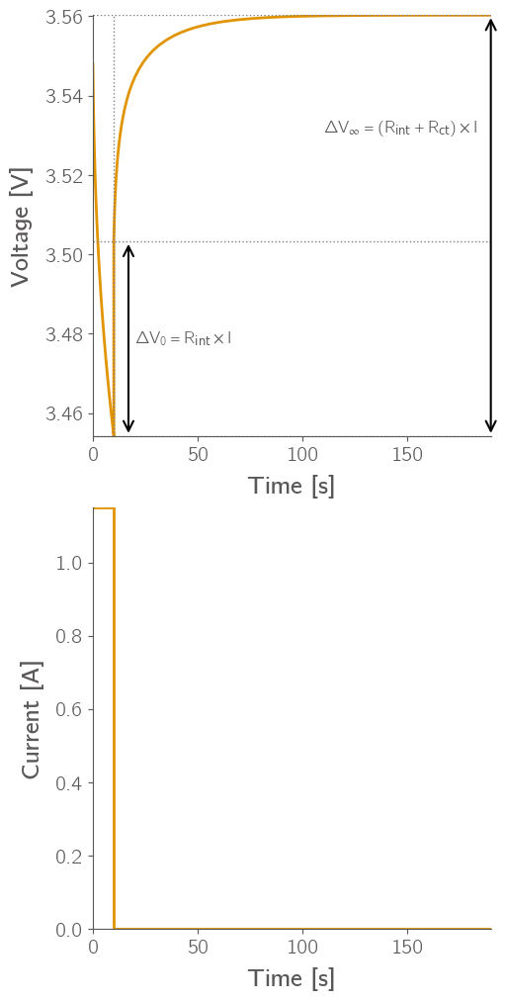
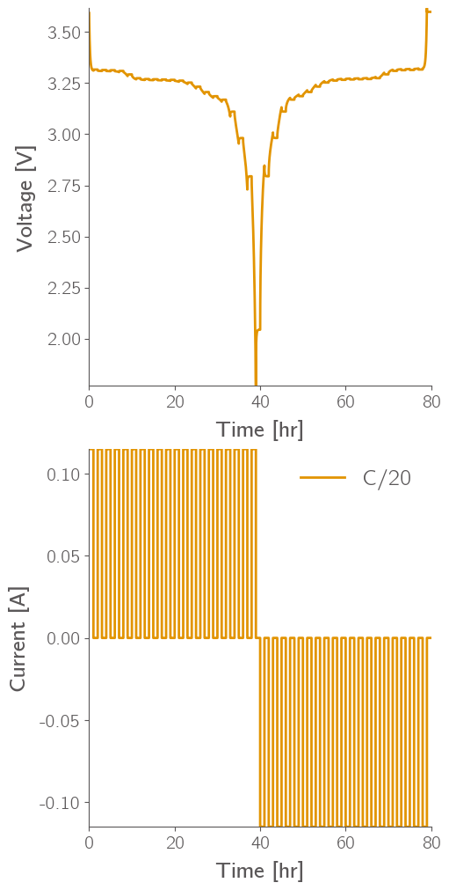
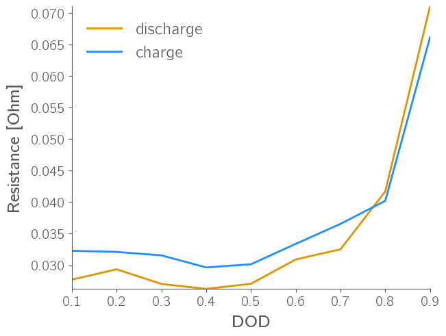
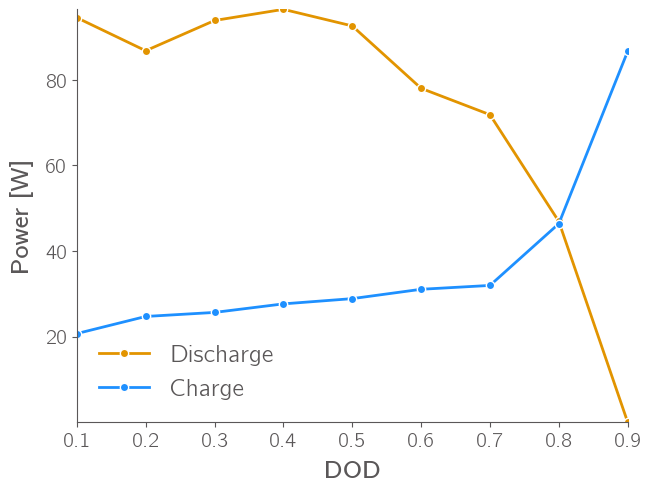

!pip install pybamm
zsh:1: command not found: pip
!pip install niceplots
zsh:1: command not found: pip
import pybamm
import matplotlib.pyplot as plt
import numpy as np
import niceplots
plt.style.use(niceplots.get_style())
colors = niceplots.get_colors_list()
---------------------------------------------------------------------------
ModuleNotFoundError Traceback (most recent call last)
Cell In[3], line 1
----> 1 import pybamm
2 import matplotlib.pyplot as plt
3 import numpy as np
ModuleNotFoundError: No module named 'pybamm'
Galvanostatic discharge#
dfn_params = pybamm.ParameterValues("Prada2013")
dfn_model = pybamm.lithium_ion.DFN()
fig, ax = plt.subplots(2, 1, figsize=(5, 10))
# ax[0].plot(time, voltage, color=colors[0])
# ax[0].set_ylabel("Voltage [V]")
# ax[0].set_xlabel("Time [s]")
# ax[1].plot(time, current, color=colors[0])
# ax[1].set_ylabel("Current [A]")
# ax[1].set_xlabel("Time [s]")
# plt.show()
experiment = pybamm.Experiment(
[
"Discharge at 1C for 1 hours",
]
)
solver = pybamm.IDAKLUSolver()
sim = pybamm.Simulation(dfn_model, parameter_values=dfn_params, experiment=experiment, solver=solver)
soln = sim.solve()
voltage = soln["Voltage [V]"].entries
time = soln["Time [s]"].entries
current = soln["Current [A]"].entries
capacity = soln["Discharge capacity [A.h]"].entries
ax[0].plot(capacity, voltage, label="1C discharge")
soc_range = np.linspace(0.0, 1.0, 32)
x0, x100, y100, y0 = pybamm.lithium_ion.get_min_max_stoichiometries(
dfn_params
)
z = pybamm.InputParameter("SOC")
x = x0 + z * (x100 - x0)
y = y0 - z * (y0 - y100)
c_n_max = dfn_params[
"Maximum concentration in negative electrode [mol.m-3]"
]
c_p_max = dfn_params[
"Maximum concentration in positive electrode [mol.m-3]"
]
dfn_params.update(
{
"Initial concentration in negative electrode [mol.m-3]": x * c_n_max,
"Initial concentration in positive electrode [mol.m-3]": y * c_p_max,
}
)
positive_ocp = dfn_params["Positive electrode OCP [V]"]
negative_ocp = dfn_params["Negative electrode OCP [V]"]
neg_sto = x0 + soc_range * (x100 - x0)
pos_sto = y0 - soc_range * (y0 - y100)
OCV = positive_ocp(pos_sto) - negative_ocp(neg_sto)
ax[0].plot(soc_range * capacity[-1], OCV[::-1], label="OCV")
ax[0].fill_between(
capacity, # x-axis values
voltage, # lower curve
np.interp(capacity, soc_range * capacity[-1], OCV[::-1]), # interpolate OCV onto same x grid
color="lightgreen", alpha=0.3, label="Loss"
)
ax[0].legend()
ax[0].set_xlabel("Discharge capacity [A.h]")
ax[0].set_ylabel("Voltage [V]")
# plt.show()
ax[1].plot(capacity, current, color=colors[0])
ax[1].set_ylabel("Current [A]")
ax[1].set_xlabel("Capacity [A.h]")
plt.savefig("galvanostatic.pdf")
from google.colab import files
files.download("galvanostatic.pdf")
# plt.show()
2025-09-06 15:44:10.852 - [WARNING] callbacks.on_experiment_infeasible_event(254):
Experiment is infeasible: 'event: Minimum voltage [V]' was triggered during 'Discharge at 1C for 1 hours'. The returned solution only contains up to step 1 of cycle 1.
WARNING:pybamm.logger:
Experiment is infeasible: 'event: Minimum voltage [V]' was triggered during 'Discharge at 1C for 1 hours'. The returned solution only contains up to step 1 of cycle 1.
Capacity = \(\int I dt\)
Internal Resistance (SOC / Time) = \(\frac{OCV - V}{I}\)
Potentiostatic discharge#
dfn_params = pybamm.ParameterValues("Prada2013")
dfn_model = pybamm.lithium_ion.DFN()
experiment = pybamm.Experiment(
[
# "Rest for 100 seconds",
# "Discharge at 1C for 30 seconds",
"Discharge at 1C until 3.2 V",
"Hold at 3.2 V until 50mA"
]
)
solver = pybamm.IDAKLUSolver()
sim = pybamm.Simulation(dfn_model, parameter_values=dfn_params, experiment=experiment, solver=solver)
soln = sim.solve()
voltage = soln["Voltage [V]"].entries
time = soln["Time [s]"].entries
current = soln["Current [A]"].entries
capacity = soln["Discharge capacity [A.h]"].entries
idx = np.where(voltage == 3.2)[0]
current_max = current[idx][0]
current_normal = current[idx] / current_max
idx2 = np.where(current_normal < 0.367)[0][0]
time_normal = time[idx] - time[idx][0]
tau = time_normal[idx2]
print(current_max)
print(tau)
fig, ax = plt.subplots(2, 1, figsize=(10, 5))
ax[1].plot(time_normal, current_max * (np.exp(-time_normal / tau)), linestyle="--", color="black", label=r"2.3$e^{\frac{-t}{1682}}$")
# ax[1].plot(time_normal, current_normal, color=colors[0])
# ax[1].set_ylabel("Current
ax[0].plot(time[idx] - time[idx][0], voltage[idx], color=colors[0])
ax[0].set_ylabel("Voltage [V]")
ax[0].set_xlabel("Time [s]")
ax[1].plot(time[idx]-time[idx][0], current[idx], color=colors[0])
ax[1].set_ylabel("Current [A]")
ax[1].set_xlabel("Time [s]")
plt.legend()
# plt.savefig("potentiostatic.pdf")
# from google.colab import files
# files.download("potentiostatic.pdf")
2.3
1682.4933680001734
<matplotlib.legend.Legend at 0x7f96704eb590>
Pulse#
dfn_params = pybamm.ParameterValues("Prada2013")
dfn_model = pybamm.lithium_ion.DFN()
experiment = pybamm.Experiment(
[
f"Discharge at 0.5C for 10 seconds",
"Rest for 3 minutes",
]
)
solver = pybamm.IDAKLUSolver()
sim = pybamm.Simulation(dfn_model, parameter_values=dfn_params, experiment=experiment, solver=solver)
soln = sim.solve()
voltage = soln["Voltage [V]"].entries
time = soln["Time [s]"].entries
current = soln["Current [A]"].entries
capacity = soln["Discharge capacity [A.h]"].entries
fig, ax = plt.subplots(2,1,figsize=(5,10))
ax[0].plot(time, voltage, color=colors[0])
ax[0].set_ylabel("Voltage [V]")
ax[0].set_xlabel("Time [s]")
ax[1].plot(time, current, color=colors[0])
ax[1].set_ylabel("Current [A]")
ax[1].set_xlabel("Time [s]")
h_bar= 3.50328755
# Horizontal dotted reference lines
ax[0].axhline(min(voltage)-1e-4, ls=":", color="gray", lw=1)
ax[0].axhline(h_bar, ls=":", color="gray", lw=1)
ax[0].axhline(max(voltage) + 1e-4, ls=":", color="gray", lw=1)
# Vertical dotted line at t=10
ax[0].axvline(10, ls=":", color="gray", lw=1)
# Δv0 arrow
ax[0].annotate(
"", xy=(17, min(voltage)), xytext=(17, h_bar),
arrowprops=dict(arrowstyle="<->", lw=1.5, color="black")
)
ax[0].text(20, (min(voltage)+h_bar)/2, r"$\Delta V_0 = R_{\text{int}} \times I$", va="center", fontsize=12)
# Δv∞ arrow
ax[0].annotate(
"", xy=(time[-1], max(voltage)), xytext=(time[-1], min(voltage)),
arrowprops=dict(arrowstyle="<->", lw=1.5, color="black")
)
ax[0].text(110, 0.5*(max(voltage)+h_bar), r"$\Delta V_\infty = (R_{\text{int}} + R_{\text{ct}}) \times I$", va="center", fontsize=12)
plt.savefig("pulse.pdf")
from google.colab import files
files.download("pulse.pdf")

print(voltage)
[3.54793825 3.54791302 3.54788781 3.54783748 3.54773716 3.54753788
3.5471446 3.54637802 3.5456309 3.5449022 3.5434864 3.54213179
3.5395946 3.53726096 3.53510314 3.53309733 3.52947243 3.52625696
3.52334872 3.52069237 3.5182285 3.51549183 3.51297756 3.5106165
3.50837807 3.50627701 3.50429147 3.50238649 3.50056545 3.49881049
3.49712875 3.49549826 3.49392716 3.49092189 3.48808419 3.48539232
3.48282809 3.47802987 3.47359411 3.46944592 3.46554833 3.46184905
3.45837749 3.45502142 3.45424475 3.50328755 3.50340496 3.50349826
3.5036828 3.5040435 3.50473495 3.50539948 3.50603891 3.50726508
3.50841235 3.51049369 3.51232814 3.51395922 3.51542316 3.51794243
3.51986883 3.52169669 3.52331481 3.52476499 3.52607687 3.52727332
3.52837279 3.53033555 3.53204673 3.53355905 3.53491073 3.53613123
3.53724258 3.53920248 3.5408816 3.54233879 3.54361954 3.54475792
3.54670389 3.54830942 3.54965344 3.55079477 3.551778 3.55263451
3.55405549 3.55507316 3.55590152 3.5565839 3.55715183 3.5576273
3.55802729 3.55836465 3.55864939 3.55909355 3.55941412 3.55964747
3.55981657 3.55993821 3.56002556 3.5600888 3.56016879 3.56021205
3.56023447 3.56024442 3.56024877 3.56025089]
Fitting 1RC circuit, procedure similar to HW
OCV (GITT)#
dfn_params = pybamm.ParameterValues("Prada2013")
dfn_model = pybamm.lithium_ion.DFN()
fig, ax = plt.subplots(2, 1, figsize=(5, 10))
experiment = pybamm.Experiment(
["Discharge at C/20 for 1 hour", "Rest for 1 hour"] * 20
+ ["Charge at C/20 for 1 hour", "Rest for 1 hour"] * 20
)
solver = pybamm.IDAKLUSolver()
sim = pybamm.Simulation(dfn_model, parameter_values=dfn_params, experiment=experiment, solver=solver)
soln = sim.solve()
voltage = soln["Voltage [V]"].entries
time = soln["Time [s]"].entries / 3600
current = soln["Current [A]"].entries
capacity = soln["Discharge capacity [A.h]"].entries
ax[0].plot(time, voltage)
ax[0].legend()
ax[0].set_xlabel("Time [hr]")
ax[0].set_ylabel("Voltage [V]")
# plt.show()
ax[1].plot(time, current, color=colors[0], label="C/20")
ax[1].set_ylabel("Current [A]")
ax[1].set_xlabel("Time [hr]")
plt.legend()
plt.savefig("gitt.pdf")
from google.colab import files
files.download("gitt.pdf")
plt.show()

HPPC#
dfn_params = pybamm.ParameterValues("Prada2013")
dfn_model = pybamm.lithium_ion.DFN()
experiment = pybamm.Experiment(
["Rest for 1 hour",
"Discharge at 0.5C for 12 minutes",
"Rest for 1 hour"]+
[
"Rest for 1 hour",
"Discharge at 1.5C for 10 seconds",
"Rest for 50 seconds",
"Charge at 1.125C for 10 seconds",
"Discharge at 0.5C for 12 minutes",
"Rest for 1 hour"
]*9
)
solver = pybamm.IDAKLUSolver()
sim = pybamm.Simulation(dfn_model, parameter_values=dfn_params, experiment=experiment, solver=solver)
soln = sim.solve()
voltage_hppc = soln["Voltage [V]"].entries
time_hppc = soln["Time [s]"].entries
current_hppc = soln["Current [A]"].entries
capacity_hppc = soln["Discharge capacity [A.h]"].entries
fig, ax = plt.subplots(2, 1, figsize=(5, 10))
ax[0].plot(time_hppc, voltage_hppc, color=colors[0])
ax[0].set_ylabel("Voltage [V]")
ax[0].set_xlabel("Time [s]")
ax[1].plot(time_hppc, current_hppc, color=colors[0])
ax[1].set_ylabel("Current [A]")
ax[1].set_xlabel("Time [s]")
# plt.savefig("hppc.pdf")
# from google.colab import files
# files.download("hppc.pdf")
# plt.show()
2025-09-06 21:25:07.271 - [WARNING] callbacks.on_experiment_infeasible_event(254):
Experiment is infeasible: 'event: Minimum voltage [V]' was triggered during 'Discharge at 0.5C for 12 minutes'. The returned solution only contains up to step 1 of cycle 56.
WARNING:pybamm.logger:
Experiment is infeasible: 'event: Minimum voltage [V]' was triggered during 'Discharge at 0.5C for 12 minutes'. The returned solution only contains up to step 1 of cycle 56.
Text(0.5, 0, 'Time [s]')
dfn_params = pybamm.ParameterValues("Prada2013")
dfn_model = pybamm.lithium_ion.DFN()
experiment = pybamm.Experiment(
[
"Discharge at 1.5C for 10 seconds",
"Rest for 50 seconds",
"Charge at 1.125C for 10 seconds",
"Rest for 100 seconds",
]*1
)
solver = pybamm.IDAKLUSolver()
sim = pybamm.Simulation(dfn_model, parameter_values=dfn_params, experiment=experiment, solver=solver)
soln = sim.solve()
voltage = soln["Voltage [V]"].entries
time = soln["Time [s]"].entries
current = soln["Current [A]"].entries
capacity = soln["Discharge capacity [A.h]"].entries
fig, ax = plt.subplots(1,2, figsize=(10, 5))
ax[0].plot(time, voltage, color=colors[0])
ax[0].set_ylabel("Voltage [V]")
ax[0].set_xlabel("Time [s]")
ax[1].plot(time, current, color=colors[0])
ax[1].set_ylabel("Current [A]")
ax[1].set_xlabel("Time [s]")
# plt.savefig("hppc_zoom.pdf")
# from google.colab import files
# files.download("hppc_zoom.pdf")
Text(0.5, 0, 'Time [s]')
idx1 = np.where(current > 3.0)[0]
idx2 = np.where(current < -2.0)[0]
volt_pdisc = voltage[idx1[-1]+1:idx2[0]]
time_pdisc = time[idx1[-1]+1:idx2[0]]
volt_offset = volt_pdisc[0]
volt_pdisc = volt_pdisc - min(volt_pdisc)
volt_scaling = max(volt_pdisc)
volt_pdisc = volt_pdisc / max(volt_pdisc)
t_offset = time_pdisc[0]
time_pdisc = time_pdisc - time_pdisc[0]
tau_idx = np.where(volt_pdisc > 0.67)[0][0]
tau_disc = time_pdisc[tau_idx]
print(tau_idx)
32
volt_pchar = voltage[idx2[-1]+1:]
time_pchar = time[idx2[-1]+1:]
volt_offset_char = min(volt_pchar)
volt_pchar = volt_pchar - min(volt_pchar)
volt_scaling_char = max(volt_pchar)
volt_pchar = volt_pchar / max(volt_pchar)
t_offset_char = time_pchar[0]
time_pchar = time_pchar - time_pchar[0]
tau_idx = np.where(volt_pchar < 0.33)[0][0]
tau_char = time_pchar[tau_idx]
print(tau_char)
4.970551503580026
dfn_params = pybamm.ParameterValues("Prada2013")
dfn_model = pybamm.lithium_ion.DFN()
experiment = pybamm.Experiment(
[
"Discharge at 1.5C for 10 seconds",
"Rest for 50 seconds",
"Charge at 1.125C for 10 seconds",
"Rest for 50 seconds",
]*1
)
solver = pybamm.IDAKLUSolver()
sim = pybamm.Simulation(dfn_model, parameter_values=dfn_params, experiment=experiment, solver=solver)
soln = sim.solve()
voltage = soln["Voltage [V]"].entries
time = soln["Time [s]"].entries
current = soln["Current [A]"].entries
capacity = soln["Discharge capacity [A.h]"].entries
fig, ax = plt.subplots(1,2, figsize=(10, 5))
ax[0].plot(time, voltage, color=colors[0])
ax[0].set_ylabel("Voltage [V]")
ax[0].set_xlabel("Time [s]")
ax[1].plot(time, current, color=colors[0])
ax[1].set_ylabel("Current [A]")
ax[1].set_xlabel("Time [s]")
ax[0].plot(time[idx1[-1]+1:idx2[0]], volt_offset + volt_scaling*(1-np.exp(-(time[idx1[-1]+1:idx2[0]] - t_offset)/tau_disc)), color="black", linestyle="--")
ax[0].plot(time[idx2[-1]+1:], volt_offset_char + volt_scaling_char*(np.exp(-(time[idx2[-1]+1:] - t_offset_char)/tau_char)), color="black", linestyle="--")
print(volt_offset, volt_scaling, t_offset, tau_disc)
print(volt_offset_char, volt_scaling_char, t_offset_char, tau_char)
ax[0].text(25, 3.45, r"3.4 + 0.09($1 - e^{-\frac{t-10}{9.2}}$)", va="center", fontsize=15)
ax[0].text(85, 3.63, r"3.57 + 0.19$e^{-\frac{t-70}{4.5}}$", va="center", fontsize=15)
plt.savefig("hppc_zoom.pdf")
from google.colab import files
files.download("hppc_zoom.pdf")
3.3967386204932577 0.09764755095845468 10.000000000000002 9.16497998611378
3.569689186821537 0.19858895192836235 70.00000000000001 4.970551503580026
idx1 = np.where(current_hppc > 3.0)[0]
idx2 = np.where(current_hppc < -2.0)[0]
breaks = np.flatnonzero(np.diff(idx1) != 1)
# Start/end indices of each contiguous block
starts = np.r_[0, breaks + 1]
ends = np.r_[breaks, len(idx1) - 1]
# (start, end) value pairs
value_pairs = np.column_stack((idx1[starts], idx1[ends]))
voltage_lims = voltage_hppc[value_pairs]
v_avg = np.mean(voltage_lims, axis=1)
power = v_avg * current_hppc[idx1][0]
plt.plot(np.array([0.1, 0.2, 0.3, 0.4, 0.5, 0.6, 0.7, 0.8, 0.9]), power)
plt.scatter(np.array([0.1, 0.2, 0.3, 0.4, 0.5, 0.6, 0.7, 0.8, 0.9]), power)
plt.xlabel("DOD")
plt.ylabel("Power [W]")
# plt.savefig("hppc_power.pdf")
# from google.colab import files
# files.download("hppc_power.pdf")
Text(0, 0.5, 'Power [W]')
idx_before_jumps = np.where(np.diff(idx1) > 2)[0]
disc_end = np.concatenate((idx1[idx_before_jumps], [idx1[-1]]))
disc_start = np.concatenate(([idx1[0]], idx1[idx_before_jumps+1]))-1
idx_before_jumps = np.where(np.diff(idx2) > 2)[0]
char_end = np.concatenate((idx2[idx_before_jumps], [idx2[-1]]))
char_start = np.concatenate(([idx2[0]], idx2[idx_before_jumps+1]))-1
R_disc = np.abs((voltage_hppc[disc_end] - voltage_hppc[disc_start]) / (current_hppc[disc_end] - current_hppc[disc_start]))
R_char = np.abs((voltage_hppc[char_end] - voltage_hppc[char_start]) / (current_hppc[char_end] - current_hppc[char_start]))
plt.plot(np.array([0.1, 0.2, 0.3, 0.4, 0.5, 0.6, 0.7, 0.8, 0.9]), R_disc, label="discharge")
plt.plot(np.array([0.1, 0.2, 0.3, 0.4, 0.5, 0.6, 0.7, 0.8, 0.9]), R_char, label="charge")
plt.xlabel("DOD")
plt.ylabel("Resistance [Ohm]")
plt.legend()
plt.savefig("hppc_R.pdf")
from google.colab import files
files.download("hppc_R.pdf")

parameter_values = pybamm.ParameterValues("Prada2013")
delta = 0.1
soc_range = np.array([0.1, 0.2, 0.3, 0.4, 0.5, 0.6, 0.7, 0.8, 0.9]) - delta
soc_range_char = np.array([0.1, 0.2, 0.3, 0.4, 0.5, 0.6, 0.7, 0.8, 0.9]) - (1./240.) - delta
# soc_range = np.linspace(0.0, 1.0, 32)
x0, x100, y100, y0 = pybamm.lithium_ion.get_min_max_stoichiometries(
parameter_values
)
z = pybamm.InputParameter("SOC")
x = x0 + z * (x100 - x0)
y = y0 - z * (y0 - y100)
c_n_max = parameter_values[
"Maximum concentration in negative electrode [mol.m-3]"
]
c_p_max = parameter_values[
"Maximum concentration in positive electrode [mol.m-3]"
]
parameter_values.update(
{
"Initial concentration in negative electrode [mol.m-3]": x * c_n_max,
"Initial concentration in positive electrode [mol.m-3]": y * c_p_max,
}
)
positive_ocp = dfn_params["Positive electrode OCP [V]"]
negative_ocp = dfn_params["Negative electrode OCP [V]"]
neg_sto = x0 + soc_range * (x100 - x0)
pos_sto = y0 - soc_range * (y0 - y100)
OCV = positive_ocp(pos_sto) - negative_ocp(neg_sto)
neg_sto = x0 + soc_range_char * (x100 - x0)
pos_sto = y0 - soc_range_char * (y0 - y100)
OCV_char = positive_ocp(pos_sto) - negative_ocp(neg_sto)
V_min = 2.0
power_disc = V_min * (OCV[::-1] - V_min) / R_disc
power_char = 3.5 * (3.5 - OCV_char[::-1]) / R_char
plt.plot(np.array([0.1, 0.2, 0.3, 0.4, 0.5, 0.6, 0.7, 0.8, 0.9]), power_disc, label="Discharge", marker="o")
plt.plot(np.array([0.1, 0.2, 0.3, 0.4, 0.5, 0.6, 0.7, 0.8, 0.9]), power_char, label="Charge", marker="o")
plt.xlabel("DOD")
plt.ylabel("Power [W]")
plt.legend()
plt.savefig("hppc_power.pdf")
files.download("hppc_power.pdf")

We can test power capabilities at every 10% DOD of the cell.
We can compute \(R_{disc}\) and \(R_{charge}\), from a simple \(\Delta V/I\) formula and get the resistances as functions fo SOC.
If we assume a simple internal resistance model:
We can express the current as: \(I = \frac{OCV(Z) - V}{R}\)
then power is V * I,
for discharge power pulse we clamp V to \(V_{min}\) and for charge \(V_{max}\).
Warburg impedance (CPE)#
GITT/PITT? Diffusion coefficient extraction for warburg? Might be too much.
We can show GITT as a technique to extract OCV, RC values and diffusion coefficient all in one experiment.
EIS#
!pip install pybammeis==0.1.5
Collecting pybammeis==0.1.5
Downloading pybammeis-0.1.5-py3-none-any.whl.metadata (6.6 kB)
Requirement already satisfied: pybamm>=24.9 in /usr/local/lib/python3.12/dist-packages (from pybamm[all]>=24.9->pybammeis==0.1.5) (25.8.0)
Requirement already satisfied: matplotlib in /usr/local/lib/python3.12/dist-packages (from pybammeis==0.1.5) (3.10.0)
Requirement already satisfied: anytree>=2.8.0 in /usr/local/lib/python3.12/dist-packages (from pybamm>=24.9->pybamm[all]>=24.9->pybammeis==0.1.5) (2.13.0)
Requirement already satisfied: casadi==3.6.7 in /usr/local/lib/python3.12/dist-packages (from pybamm>=24.9->pybamm[all]>=24.9->pybammeis==0.1.5) (3.6.7)
Requirement already satisfied: numpy<2.0.0,>=1.23.5 in /usr/local/lib/python3.12/dist-packages (from pybamm>=24.9->pybamm[all]>=24.9->pybammeis==0.1.5) (1.26.4)
Requirement already satisfied: pandas>=1.5.0 in /usr/local/lib/python3.12/dist-packages (from pybamm>=24.9->pybamm[all]>=24.9->pybammeis==0.1.5) (2.2.2)
Requirement already satisfied: platformdirs in /usr/local/lib/python3.12/dist-packages (from pybamm>=24.9->pybamm[all]>=24.9->pybammeis==0.1.5) (4.4.0)
Requirement already satisfied: pooch>=1.8.1 in /usr/local/lib/python3.12/dist-packages (from pybamm>=24.9->pybamm[all]>=24.9->pybammeis==0.1.5) (1.8.2)
Requirement already satisfied: posthog in /usr/local/lib/python3.12/dist-packages (from pybamm>=24.9->pybamm[all]>=24.9->pybammeis==0.1.5) (6.7.4)
Requirement already satisfied: pybammsolvers in /usr/local/lib/python3.12/dist-packages (from pybamm>=24.9->pybamm[all]>=24.9->pybammeis==0.1.5) (0.1.0)
Requirement already satisfied: pyyaml in /usr/local/lib/python3.12/dist-packages (from pybamm>=24.9->pybamm[all]>=24.9->pybammeis==0.1.5) (6.0.2)
Requirement already satisfied: scipy>=1.11.4 in /usr/local/lib/python3.12/dist-packages (from pybamm>=24.9->pybamm[all]>=24.9->pybammeis==0.1.5) (1.16.1)
Requirement already satisfied: sympy>=1.12 in /usr/local/lib/python3.12/dist-packages (from pybamm>=24.9->pybamm[all]>=24.9->pybammeis==0.1.5) (1.13.3)
Requirement already satisfied: typing-extensions>=4.10.0 in /usr/local/lib/python3.12/dist-packages (from pybamm>=24.9->pybamm[all]>=24.9->pybammeis==0.1.5) (4.15.0)
Requirement already satisfied: xarray>=2022.6.0 in /usr/local/lib/python3.12/dist-packages (from pybamm>=24.9->pybamm[all]>=24.9->pybammeis==0.1.5) (2025.8.0)
Collecting bpx<0.6.0,>=0.5.0 (from pybamm[all]>=24.9->pybammeis==0.1.5)
Downloading bpx-0.5.0-py3-none-any.whl.metadata (7.2 kB)
Collecting jupyter (from pybamm[all]>=24.9->pybammeis==0.1.5)
Downloading jupyter-1.1.1-py2.py3-none-any.whl.metadata (2.0 kB)
Collecting pybtex>=0.25.0 (from pybamm[all]>=24.9->pybammeis==0.1.5)
Downloading pybtex-0.25.1-py2.py3-none-any.whl.metadata (2.2 kB)
Collecting scikit-fem>=8.1.0 (from pybamm[all]>=24.9->pybammeis==0.1.5)
Downloading scikit_fem-11.0.0-py3-none-any.whl.metadata (34 kB)
Requirement already satisfied: tqdm in /usr/local/lib/python3.12/dist-packages (from pybamm[all]>=24.9->pybammeis==0.1.5) (4.67.1)
Requirement already satisfied: contourpy>=1.0.1 in /usr/local/lib/python3.12/dist-packages (from matplotlib->pybammeis==0.1.5) (1.3.3)
Requirement already satisfied: cycler>=0.10 in /usr/local/lib/python3.12/dist-packages (from matplotlib->pybammeis==0.1.5) (0.12.1)
Requirement already satisfied: fonttools>=4.22.0 in /usr/local/lib/python3.12/dist-packages (from matplotlib->pybammeis==0.1.5) (4.59.2)
Requirement already satisfied: kiwisolver>=1.3.1 in /usr/local/lib/python3.12/dist-packages (from matplotlib->pybammeis==0.1.5) (1.4.9)
Requirement already satisfied: packaging>=20.0 in /usr/local/lib/python3.12/dist-packages (from matplotlib->pybammeis==0.1.5) (25.0)
Requirement already satisfied: pillow>=8 in /usr/local/lib/python3.12/dist-packages (from matplotlib->pybammeis==0.1.5) (11.3.0)
Requirement already satisfied: pyparsing>=2.3.1 in /usr/local/lib/python3.12/dist-packages (from matplotlib->pybammeis==0.1.5) (3.2.3)
Requirement already satisfied: python-dateutil>=2.7 in /usr/local/lib/python3.12/dist-packages (from matplotlib->pybammeis==0.1.5) (2.9.0.post0)
Requirement already satisfied: pydantic>=2.6 in /usr/local/lib/python3.12/dist-packages (from bpx<0.6.0,>=0.5.0->pybamm[all]>=24.9->pybammeis==0.1.5) (2.11.7)
Requirement already satisfied: pytz>=2020.1 in /usr/local/lib/python3.12/dist-packages (from pandas>=1.5.0->pybamm>=24.9->pybamm[all]>=24.9->pybammeis==0.1.5) (2025.2)
Requirement already satisfied: tzdata>=2022.7 in /usr/local/lib/python3.12/dist-packages (from pandas>=1.5.0->pybamm>=24.9->pybamm[all]>=24.9->pybammeis==0.1.5) (2025.2)
Requirement already satisfied: requests>=2.19.0 in /usr/local/lib/python3.12/dist-packages (from pooch>=1.8.1->pybamm>=24.9->pybamm[all]>=24.9->pybammeis==0.1.5) (2.32.4)
Collecting latexcodec>=1.0.4 (from pybtex>=0.25.0->pybamm[all]>=24.9->pybammeis==0.1.5)
Downloading latexcodec-3.0.1-py3-none-any.whl.metadata (5.2 kB)
Requirement already satisfied: six>=1.5 in /usr/local/lib/python3.12/dist-packages (from python-dateutil>=2.7->matplotlib->pybammeis==0.1.5) (1.17.0)
Requirement already satisfied: mpmath<1.4,>=1.1.0 in /usr/local/lib/python3.12/dist-packages (from sympy>=1.12->pybamm>=24.9->pybamm[all]>=24.9->pybammeis==0.1.5) (1.3.0)
Requirement already satisfied: notebook in /usr/local/lib/python3.12/dist-packages (from jupyter->pybamm[all]>=24.9->pybammeis==0.1.5) (6.5.7)
Requirement already satisfied: jupyter-console in /usr/local/lib/python3.12/dist-packages (from jupyter->pybamm[all]>=24.9->pybammeis==0.1.5) (6.6.3)
Requirement already satisfied: nbconvert in /usr/local/lib/python3.12/dist-packages (from jupyter->pybamm[all]>=24.9->pybammeis==0.1.5) (7.16.6)
Requirement already satisfied: ipykernel in /usr/local/lib/python3.12/dist-packages (from jupyter->pybamm[all]>=24.9->pybammeis==0.1.5) (6.17.1)
Requirement already satisfied: ipywidgets in /usr/local/lib/python3.12/dist-packages (from jupyter->pybamm[all]>=24.9->pybammeis==0.1.5) (7.7.1)
Collecting jupyterlab (from jupyter->pybamm[all]>=24.9->pybammeis==0.1.5)
Downloading jupyterlab-4.4.7-py3-none-any.whl.metadata (16 kB)
Requirement already satisfied: backoff>=1.10.0 in /usr/local/lib/python3.12/dist-packages (from posthog->pybamm>=24.9->pybamm[all]>=24.9->pybammeis==0.1.5) (2.2.1)
Requirement already satisfied: distro>=1.5.0 in /usr/local/lib/python3.12/dist-packages (from posthog->pybamm>=24.9->pybamm[all]>=24.9->pybammeis==0.1.5) (1.9.0)
Requirement already satisfied: annotated-types>=0.6.0 in /usr/local/lib/python3.12/dist-packages (from pydantic>=2.6->bpx<0.6.0,>=0.5.0->pybamm[all]>=24.9->pybammeis==0.1.5) (0.7.0)
Requirement already satisfied: pydantic-core==2.33.2 in /usr/local/lib/python3.12/dist-packages (from pydantic>=2.6->bpx<0.6.0,>=0.5.0->pybamm[all]>=24.9->pybammeis==0.1.5) (2.33.2)
Requirement already satisfied: typing-inspection>=0.4.0 in /usr/local/lib/python3.12/dist-packages (from pydantic>=2.6->bpx<0.6.0,>=0.5.0->pybamm[all]>=24.9->pybammeis==0.1.5) (0.4.1)
Requirement already satisfied: charset_normalizer<4,>=2 in /usr/local/lib/python3.12/dist-packages (from requests>=2.19.0->pooch>=1.8.1->pybamm>=24.9->pybamm[all]>=24.9->pybammeis==0.1.5) (3.4.3)
Requirement already satisfied: idna<4,>=2.5 in /usr/local/lib/python3.12/dist-packages (from requests>=2.19.0->pooch>=1.8.1->pybamm>=24.9->pybamm[all]>=24.9->pybammeis==0.1.5) (3.10)
Requirement already satisfied: urllib3<3,>=1.21.1 in /usr/local/lib/python3.12/dist-packages (from requests>=2.19.0->pooch>=1.8.1->pybamm>=24.9->pybamm[all]>=24.9->pybammeis==0.1.5) (2.5.0)
Requirement already satisfied: certifi>=2017.4.17 in /usr/local/lib/python3.12/dist-packages (from requests>=2.19.0->pooch>=1.8.1->pybamm>=24.9->pybamm[all]>=24.9->pybammeis==0.1.5) (2025.8.3)
Requirement already satisfied: debugpy>=1.0 in /usr/local/lib/python3.12/dist-packages (from ipykernel->jupyter->pybamm[all]>=24.9->pybammeis==0.1.5) (1.8.15)
Requirement already satisfied: ipython>=7.23.1 in /usr/local/lib/python3.12/dist-packages (from ipykernel->jupyter->pybamm[all]>=24.9->pybammeis==0.1.5) (7.34.0)
Requirement already satisfied: jupyter-client>=6.1.12 in /usr/local/lib/python3.12/dist-packages (from ipykernel->jupyter->pybamm[all]>=24.9->pybammeis==0.1.5) (7.4.9)
Requirement already satisfied: matplotlib-inline>=0.1 in /usr/local/lib/python3.12/dist-packages (from ipykernel->jupyter->pybamm[all]>=24.9->pybammeis==0.1.5) (0.1.7)
Requirement already satisfied: nest-asyncio in /usr/local/lib/python3.12/dist-packages (from ipykernel->jupyter->pybamm[all]>=24.9->pybammeis==0.1.5) (1.6.0)
Requirement already satisfied: psutil in /usr/local/lib/python3.12/dist-packages (from ipykernel->jupyter->pybamm[all]>=24.9->pybammeis==0.1.5) (5.9.5)
Requirement already satisfied: pyzmq>=17 in /usr/local/lib/python3.12/dist-packages (from ipykernel->jupyter->pybamm[all]>=24.9->pybammeis==0.1.5) (26.2.1)
Requirement already satisfied: tornado>=6.1 in /usr/local/lib/python3.12/dist-packages (from ipykernel->jupyter->pybamm[all]>=24.9->pybammeis==0.1.5) (6.4.2)
Requirement already satisfied: traitlets>=5.1.0 in /usr/local/lib/python3.12/dist-packages (from ipykernel->jupyter->pybamm[all]>=24.9->pybammeis==0.1.5) (5.7.1)
Requirement already satisfied: ipython-genutils~=0.2.0 in /usr/local/lib/python3.12/dist-packages (from ipywidgets->jupyter->pybamm[all]>=24.9->pybammeis==0.1.5) (0.2.0)
Requirement already satisfied: widgetsnbextension~=3.6.0 in /usr/local/lib/python3.12/dist-packages (from ipywidgets->jupyter->pybamm[all]>=24.9->pybammeis==0.1.5) (3.6.10)
Requirement already satisfied: jupyterlab-widgets>=1.0.0 in /usr/local/lib/python3.12/dist-packages (from ipywidgets->jupyter->pybamm[all]>=24.9->pybammeis==0.1.5) (3.0.15)
Requirement already satisfied: jupyter-core!=5.0.*,>=4.12 in /usr/local/lib/python3.12/dist-packages (from jupyter-console->jupyter->pybamm[all]>=24.9->pybammeis==0.1.5) (5.8.1)
Requirement already satisfied: prompt-toolkit>=3.0.30 in /usr/local/lib/python3.12/dist-packages (from jupyter-console->jupyter->pybamm[all]>=24.9->pybammeis==0.1.5) (3.0.52)
Requirement already satisfied: pygments in /usr/local/lib/python3.12/dist-packages (from jupyter-console->jupyter->pybamm[all]>=24.9->pybammeis==0.1.5) (2.19.2)
Collecting async-lru>=1.0.0 (from jupyterlab->jupyter->pybamm[all]>=24.9->pybammeis==0.1.5)
Downloading async_lru-2.0.5-py3-none-any.whl.metadata (4.5 kB)
Requirement already satisfied: httpx<1,>=0.25.0 in /usr/local/lib/python3.12/dist-packages (from jupyterlab->jupyter->pybamm[all]>=24.9->pybammeis==0.1.5) (0.28.1)
Requirement already satisfied: jinja2>=3.0.3 in /usr/local/lib/python3.12/dist-packages (from jupyterlab->jupyter->pybamm[all]>=24.9->pybammeis==0.1.5) (3.1.6)
Collecting jupyter-lsp>=2.0.0 (from jupyterlab->jupyter->pybamm[all]>=24.9->pybammeis==0.1.5)
Downloading jupyter_lsp-2.3.0-py3-none-any.whl.metadata (1.8 kB)
Requirement already satisfied: jupyter-server<3,>=2.4.0 in /usr/local/lib/python3.12/dist-packages (from jupyterlab->jupyter->pybamm[all]>=24.9->pybammeis==0.1.5) (2.14.0)
Collecting jupyterlab-server<3,>=2.27.1 (from jupyterlab->jupyter->pybamm[all]>=24.9->pybammeis==0.1.5)
Downloading jupyterlab_server-2.27.3-py3-none-any.whl.metadata (5.9 kB)
Requirement already satisfied: notebook-shim>=0.2 in /usr/local/lib/python3.12/dist-packages (from jupyterlab->jupyter->pybamm[all]>=24.9->pybammeis==0.1.5) (0.2.4)
Requirement already satisfied: setuptools>=41.1.0 in /usr/local/lib/python3.12/dist-packages (from jupyterlab->jupyter->pybamm[all]>=24.9->pybammeis==0.1.5) (75.2.0)
Requirement already satisfied: beautifulsoup4 in /usr/local/lib/python3.12/dist-packages (from nbconvert->jupyter->pybamm[all]>=24.9->pybammeis==0.1.5) (4.13.5)
Requirement already satisfied: bleach!=5.0.0 in /usr/local/lib/python3.12/dist-packages (from bleach[css]!=5.0.0->nbconvert->jupyter->pybamm[all]>=24.9->pybammeis==0.1.5) (6.2.0)
Requirement already satisfied: defusedxml in /usr/local/lib/python3.12/dist-packages (from nbconvert->jupyter->pybamm[all]>=24.9->pybammeis==0.1.5) (0.7.1)
Requirement already satisfied: jupyterlab-pygments in /usr/local/lib/python3.12/dist-packages (from nbconvert->jupyter->pybamm[all]>=24.9->pybammeis==0.1.5) (0.3.0)
Requirement already satisfied: markupsafe>=2.0 in /usr/local/lib/python3.12/dist-packages (from nbconvert->jupyter->pybamm[all]>=24.9->pybammeis==0.1.5) (3.0.2)
Requirement already satisfied: mistune<4,>=2.0.3 in /usr/local/lib/python3.12/dist-packages (from nbconvert->jupyter->pybamm[all]>=24.9->pybammeis==0.1.5) (3.1.4)
Requirement already satisfied: nbclient>=0.5.0 in /usr/local/lib/python3.12/dist-packages (from nbconvert->jupyter->pybamm[all]>=24.9->pybammeis==0.1.5) (0.10.2)
Requirement already satisfied: nbformat>=5.7 in /usr/local/lib/python3.12/dist-packages (from nbconvert->jupyter->pybamm[all]>=24.9->pybammeis==0.1.5) (5.10.4)
Requirement already satisfied: pandocfilters>=1.4.1 in /usr/local/lib/python3.12/dist-packages (from nbconvert->jupyter->pybamm[all]>=24.9->pybammeis==0.1.5) (1.5.1)
Requirement already satisfied: argon2-cffi in /usr/local/lib/python3.12/dist-packages (from notebook->jupyter->pybamm[all]>=24.9->pybammeis==0.1.5) (25.1.0)
Requirement already satisfied: Send2Trash>=1.8.0 in /usr/local/lib/python3.12/dist-packages (from notebook->jupyter->pybamm[all]>=24.9->pybammeis==0.1.5) (1.8.3)
Requirement already satisfied: terminado>=0.8.3 in /usr/local/lib/python3.12/dist-packages (from notebook->jupyter->pybamm[all]>=24.9->pybammeis==0.1.5) (0.18.1)
Requirement already satisfied: prometheus-client in /usr/local/lib/python3.12/dist-packages (from notebook->jupyter->pybamm[all]>=24.9->pybammeis==0.1.5) (0.22.1)
Requirement already satisfied: nbclassic>=0.4.7 in /usr/local/lib/python3.12/dist-packages (from notebook->jupyter->pybamm[all]>=24.9->pybammeis==0.1.5) (1.3.1)
Requirement already satisfied: webencodings in /usr/local/lib/python3.12/dist-packages (from bleach!=5.0.0->bleach[css]!=5.0.0->nbconvert->jupyter->pybamm[all]>=24.9->pybammeis==0.1.5) (0.5.1)
Requirement already satisfied: tinycss2<1.5,>=1.1.0 in /usr/local/lib/python3.12/dist-packages (from bleach[css]!=5.0.0->nbconvert->jupyter->pybamm[all]>=24.9->pybammeis==0.1.5) (1.4.0)
Requirement already satisfied: anyio in /usr/local/lib/python3.12/dist-packages (from httpx<1,>=0.25.0->jupyterlab->jupyter->pybamm[all]>=24.9->pybammeis==0.1.5) (4.10.0)
Requirement already satisfied: httpcore==1.* in /usr/local/lib/python3.12/dist-packages (from httpx<1,>=0.25.0->jupyterlab->jupyter->pybamm[all]>=24.9->pybammeis==0.1.5) (1.0.9)
Requirement already satisfied: h11>=0.16 in /usr/local/lib/python3.12/dist-packages (from httpcore==1.*->httpx<1,>=0.25.0->jupyterlab->jupyter->pybamm[all]>=24.9->pybammeis==0.1.5) (0.16.0)
Collecting jedi>=0.16 (from ipython>=7.23.1->ipykernel->jupyter->pybamm[all]>=24.9->pybammeis==0.1.5)
Downloading jedi-0.19.2-py2.py3-none-any.whl.metadata (22 kB)
Requirement already satisfied: decorator in /usr/local/lib/python3.12/dist-packages (from ipython>=7.23.1->ipykernel->jupyter->pybamm[all]>=24.9->pybammeis==0.1.5) (4.4.2)
Requirement already satisfied: pickleshare in /usr/local/lib/python3.12/dist-packages (from ipython>=7.23.1->ipykernel->jupyter->pybamm[all]>=24.9->pybammeis==0.1.5) (0.7.5)
Requirement already satisfied: backcall in /usr/local/lib/python3.12/dist-packages (from ipython>=7.23.1->ipykernel->jupyter->pybamm[all]>=24.9->pybammeis==0.1.5) (0.2.0)
Requirement already satisfied: pexpect>4.3 in /usr/local/lib/python3.12/dist-packages (from ipython>=7.23.1->ipykernel->jupyter->pybamm[all]>=24.9->pybammeis==0.1.5) (4.9.0)
Requirement already satisfied: entrypoints in /usr/local/lib/python3.12/dist-packages (from jupyter-client>=6.1.12->ipykernel->jupyter->pybamm[all]>=24.9->pybammeis==0.1.5) (0.4)
Requirement already satisfied: jupyter-events>=0.9.0 in /usr/local/lib/python3.12/dist-packages (from jupyter-server<3,>=2.4.0->jupyterlab->jupyter->pybamm[all]>=24.9->pybammeis==0.1.5) (0.12.0)
Requirement already satisfied: jupyter-server-terminals>=0.4.4 in /usr/local/lib/python3.12/dist-packages (from jupyter-server<3,>=2.4.0->jupyterlab->jupyter->pybamm[all]>=24.9->pybammeis==0.1.5) (0.5.3)
Requirement already satisfied: overrides>=5.0 in /usr/local/lib/python3.12/dist-packages (from jupyter-server<3,>=2.4.0->jupyterlab->jupyter->pybamm[all]>=24.9->pybammeis==0.1.5) (7.7.0)
Requirement already satisfied: websocket-client>=1.7 in /usr/local/lib/python3.12/dist-packages (from jupyter-server<3,>=2.4.0->jupyterlab->jupyter->pybamm[all]>=24.9->pybammeis==0.1.5) (1.8.0)
Requirement already satisfied: argon2-cffi-bindings in /usr/local/lib/python3.12/dist-packages (from argon2-cffi->notebook->jupyter->pybamm[all]>=24.9->pybammeis==0.1.5) (25.1.0)
Requirement already satisfied: babel>=2.10 in /usr/local/lib/python3.12/dist-packages (from jupyterlab-server<3,>=2.27.1->jupyterlab->jupyter->pybamm[all]>=24.9->pybammeis==0.1.5) (2.17.0)
Collecting json5>=0.9.0 (from jupyterlab-server<3,>=2.27.1->jupyterlab->jupyter->pybamm[all]>=24.9->pybammeis==0.1.5)
Downloading json5-0.12.1-py3-none-any.whl.metadata (36 kB)
Requirement already satisfied: jsonschema>=4.18.0 in /usr/local/lib/python3.12/dist-packages (from jupyterlab-server<3,>=2.27.1->jupyterlab->jupyter->pybamm[all]>=24.9->pybammeis==0.1.5) (4.25.1)
Requirement already satisfied: fastjsonschema>=2.15 in /usr/local/lib/python3.12/dist-packages (from nbformat>=5.7->nbconvert->jupyter->pybamm[all]>=24.9->pybammeis==0.1.5) (2.21.2)
Requirement already satisfied: wcwidth in /usr/local/lib/python3.12/dist-packages (from prompt-toolkit>=3.0.30->jupyter-console->jupyter->pybamm[all]>=24.9->pybammeis==0.1.5) (0.2.13)
Requirement already satisfied: ptyprocess in /usr/local/lib/python3.12/dist-packages (from terminado>=0.8.3->notebook->jupyter->pybamm[all]>=24.9->pybammeis==0.1.5) (0.7.0)
Requirement already satisfied: soupsieve>1.2 in /usr/local/lib/python3.12/dist-packages (from beautifulsoup4->nbconvert->jupyter->pybamm[all]>=24.9->pybammeis==0.1.5) (2.8)
Requirement already satisfied: sniffio>=1.1 in /usr/local/lib/python3.12/dist-packages (from anyio->httpx<1,>=0.25.0->jupyterlab->jupyter->pybamm[all]>=24.9->pybammeis==0.1.5) (1.3.1)
Requirement already satisfied: parso<0.9.0,>=0.8.4 in /usr/local/lib/python3.12/dist-packages (from jedi>=0.16->ipython>=7.23.1->ipykernel->jupyter->pybamm[all]>=24.9->pybammeis==0.1.5) (0.8.5)
Requirement already satisfied: attrs>=22.2.0 in /usr/local/lib/python3.12/dist-packages (from jsonschema>=4.18.0->jupyterlab-server<3,>=2.27.1->jupyterlab->jupyter->pybamm[all]>=24.9->pybammeis==0.1.5) (25.3.0)
Requirement already satisfied: jsonschema-specifications>=2023.03.6 in /usr/local/lib/python3.12/dist-packages (from jsonschema>=4.18.0->jupyterlab-server<3,>=2.27.1->jupyterlab->jupyter->pybamm[all]>=24.9->pybammeis==0.1.5) (2025.4.1)
Requirement already satisfied: referencing>=0.28.4 in /usr/local/lib/python3.12/dist-packages (from jsonschema>=4.18.0->jupyterlab-server<3,>=2.27.1->jupyterlab->jupyter->pybamm[all]>=24.9->pybammeis==0.1.5) (0.36.2)
Requirement already satisfied: rpds-py>=0.7.1 in /usr/local/lib/python3.12/dist-packages (from jsonschema>=4.18.0->jupyterlab-server<3,>=2.27.1->jupyterlab->jupyter->pybamm[all]>=24.9->pybammeis==0.1.5) (0.27.1)
Requirement already satisfied: python-json-logger>=2.0.4 in /usr/local/lib/python3.12/dist-packages (from jupyter-events>=0.9.0->jupyter-server<3,>=2.4.0->jupyterlab->jupyter->pybamm[all]>=24.9->pybammeis==0.1.5) (3.3.0)
Requirement already satisfied: rfc3339-validator in /usr/local/lib/python3.12/dist-packages (from jupyter-events>=0.9.0->jupyter-server<3,>=2.4.0->jupyterlab->jupyter->pybamm[all]>=24.9->pybammeis==0.1.5) (0.1.4)
Requirement already satisfied: rfc3986-validator>=0.1.1 in /usr/local/lib/python3.12/dist-packages (from jupyter-events>=0.9.0->jupyter-server<3,>=2.4.0->jupyterlab->jupyter->pybamm[all]>=24.9->pybammeis==0.1.5) (0.1.1)
Requirement already satisfied: cffi>=1.0.1 in /usr/local/lib/python3.12/dist-packages (from argon2-cffi-bindings->argon2-cffi->notebook->jupyter->pybamm[all]>=24.9->pybammeis==0.1.5) (1.17.1)
Requirement already satisfied: pycparser in /usr/local/lib/python3.12/dist-packages (from cffi>=1.0.1->argon2-cffi-bindings->argon2-cffi->notebook->jupyter->pybamm[all]>=24.9->pybammeis==0.1.5) (2.22)
Requirement already satisfied: fqdn in /usr/local/lib/python3.12/dist-packages (from jsonschema[format-nongpl]>=4.18.0->jupyter-events>=0.9.0->jupyter-server<3,>=2.4.0->jupyterlab->jupyter->pybamm[all]>=24.9->pybammeis==0.1.5) (1.5.1)
Requirement already satisfied: isoduration in /usr/local/lib/python3.12/dist-packages (from jsonschema[format-nongpl]>=4.18.0->jupyter-events>=0.9.0->jupyter-server<3,>=2.4.0->jupyterlab->jupyter->pybamm[all]>=24.9->pybammeis==0.1.5) (20.11.0)
Requirement already satisfied: jsonpointer>1.13 in /usr/local/lib/python3.12/dist-packages (from jsonschema[format-nongpl]>=4.18.0->jupyter-events>=0.9.0->jupyter-server<3,>=2.4.0->jupyterlab->jupyter->pybamm[all]>=24.9->pybammeis==0.1.5) (3.0.0)
Requirement already satisfied: rfc3987-syntax>=1.1.0 in /usr/local/lib/python3.12/dist-packages (from jsonschema[format-nongpl]>=4.18.0->jupyter-events>=0.9.0->jupyter-server<3,>=2.4.0->jupyterlab->jupyter->pybamm[all]>=24.9->pybammeis==0.1.5) (1.1.0)
Requirement already satisfied: uri-template in /usr/local/lib/python3.12/dist-packages (from jsonschema[format-nongpl]>=4.18.0->jupyter-events>=0.9.0->jupyter-server<3,>=2.4.0->jupyterlab->jupyter->pybamm[all]>=24.9->pybammeis==0.1.5) (1.3.0)
Requirement already satisfied: webcolors>=24.6.0 in /usr/local/lib/python3.12/dist-packages (from jsonschema[format-nongpl]>=4.18.0->jupyter-events>=0.9.0->jupyter-server<3,>=2.4.0->jupyterlab->jupyter->pybamm[all]>=24.9->pybammeis==0.1.5) (24.11.1)
Requirement already satisfied: lark>=1.2.2 in /usr/local/lib/python3.12/dist-packages (from rfc3987-syntax>=1.1.0->jsonschema[format-nongpl]>=4.18.0->jupyter-events>=0.9.0->jupyter-server<3,>=2.4.0->jupyterlab->jupyter->pybamm[all]>=24.9->pybammeis==0.1.5) (1.2.2)
Requirement already satisfied: arrow>=0.15.0 in /usr/local/lib/python3.12/dist-packages (from isoduration->jsonschema[format-nongpl]>=4.18.0->jupyter-events>=0.9.0->jupyter-server<3,>=2.4.0->jupyterlab->jupyter->pybamm[all]>=24.9->pybammeis==0.1.5) (1.3.0)
Requirement already satisfied: types-python-dateutil>=2.8.10 in /usr/local/lib/python3.12/dist-packages (from arrow>=0.15.0->isoduration->jsonschema[format-nongpl]>=4.18.0->jupyter-events>=0.9.0->jupyter-server<3,>=2.4.0->jupyterlab->jupyter->pybamm[all]>=24.9->pybammeis==0.1.5) (2.9.0.20250822)
Downloading pybammeis-0.1.5-py3-none-any.whl (13 kB)
Downloading bpx-0.5.0-py3-none-any.whl (13 kB)
Downloading pybtex-0.25.1-py2.py3-none-any.whl (127 kB)
━━━━━━━━━━━━━━━━━━━━━━━━━━━━━━━━━━━━━━━━ 127.4/127.4 kB 7.8 MB/s eta 0:00:00
?25hDownloading scikit_fem-11.0.0-py3-none-any.whl (165 kB)
━━━━━━━━━━━━━━━━━━━━━━━━━━━━━━━━━━━━━━━━ 165.1/165.1 kB 14.9 MB/s eta 0:00:00
?25hDownloading jupyter-1.1.1-py2.py3-none-any.whl (2.7 kB)
Downloading latexcodec-3.0.1-py3-none-any.whl (18 kB)
Downloading jupyterlab-4.4.7-py3-none-any.whl (12.3 MB)
━━━━━━━━━━━━━━━━━━━━━━━━━━━━━━━━━━━━━━━━ 12.3/12.3 MB 103.7 MB/s eta 0:00:00
?25hDownloading async_lru-2.0.5-py3-none-any.whl (6.1 kB)
Downloading jupyter_lsp-2.3.0-py3-none-any.whl (76 kB)
━━━━━━━━━━━━━━━━━━━━━━━━━━━━━━━━━━━━━━━━ 76.7/76.7 kB 7.3 MB/s eta 0:00:00
?25hDownloading jupyterlab_server-2.27.3-py3-none-any.whl (59 kB)
━━━━━━━━━━━━━━━━━━━━━━━━━━━━━━━━━━━━━━━━ 59.7/59.7 kB 5.4 MB/s eta 0:00:00
?25hDownloading jedi-0.19.2-py2.py3-none-any.whl (1.6 MB)
━━━━━━━━━━━━━━━━━━━━━━━━━━━━━━━━━━━━━━━━ 1.6/1.6 MB 71.1 MB/s eta 0:00:00
?25hDownloading json5-0.12.1-py3-none-any.whl (36 kB)
Installing collected packages: latexcodec, json5, jedi, async-lru, scikit-fem, pybtex, bpx, jupyterlab-server, jupyter-lsp, jupyterlab, jupyter, pybammeis
Successfully installed async-lru-2.0.5 bpx-0.5.0 jedi-0.19.2 json5-0.12.1 jupyter-1.1.1 jupyter-lsp-2.3.0 jupyterlab-4.4.7 jupyterlab-server-2.27.3 latexcodec-3.0.1 pybammeis-0.1.5 pybtex-0.25.1 scikit-fem-11.0.0
!pip install impedance
Collecting impedance
Downloading impedance-1.7.1-py3-none-any.whl.metadata (14 kB)
Requirement already satisfied: altair>=3.0 in /usr/local/lib/python3.12/dist-packages (from impedance) (5.5.0)
Requirement already satisfied: matplotlib>=3.5 in /usr/local/lib/python3.12/dist-packages (from impedance) (3.10.0)
Requirement already satisfied: numpy>=1.14 in /usr/local/lib/python3.12/dist-packages (from impedance) (1.26.4)
Requirement already satisfied: scipy>=1.0 in /usr/local/lib/python3.12/dist-packages (from impedance) (1.16.1)
Requirement already satisfied: jinja2 in /usr/local/lib/python3.12/dist-packages (from altair>=3.0->impedance) (3.1.6)
Requirement already satisfied: jsonschema>=3.0 in /usr/local/lib/python3.12/dist-packages (from altair>=3.0->impedance) (4.25.1)
Requirement already satisfied: narwhals>=1.14.2 in /usr/local/lib/python3.12/dist-packages (from altair>=3.0->impedance) (2.3.0)
Requirement already satisfied: packaging in /usr/local/lib/python3.12/dist-packages (from altair>=3.0->impedance) (25.0)
Requirement already satisfied: typing-extensions>=4.10.0 in /usr/local/lib/python3.12/dist-packages (from altair>=3.0->impedance) (4.15.0)
Requirement already satisfied: contourpy>=1.0.1 in /usr/local/lib/python3.12/dist-packages (from matplotlib>=3.5->impedance) (1.3.3)
Requirement already satisfied: cycler>=0.10 in /usr/local/lib/python3.12/dist-packages (from matplotlib>=3.5->impedance) (0.12.1)
Requirement already satisfied: fonttools>=4.22.0 in /usr/local/lib/python3.12/dist-packages (from matplotlib>=3.5->impedance) (4.59.2)
Requirement already satisfied: kiwisolver>=1.3.1 in /usr/local/lib/python3.12/dist-packages (from matplotlib>=3.5->impedance) (1.4.9)
Requirement already satisfied: pillow>=8 in /usr/local/lib/python3.12/dist-packages (from matplotlib>=3.5->impedance) (11.3.0)
Requirement already satisfied: pyparsing>=2.3.1 in /usr/local/lib/python3.12/dist-packages (from matplotlib>=3.5->impedance) (3.2.3)
Requirement already satisfied: python-dateutil>=2.7 in /usr/local/lib/python3.12/dist-packages (from matplotlib>=3.5->impedance) (2.9.0.post0)
Requirement already satisfied: attrs>=22.2.0 in /usr/local/lib/python3.12/dist-packages (from jsonschema>=3.0->altair>=3.0->impedance) (25.3.0)
Requirement already satisfied: jsonschema-specifications>=2023.03.6 in /usr/local/lib/python3.12/dist-packages (from jsonschema>=3.0->altair>=3.0->impedance) (2025.4.1)
Requirement already satisfied: referencing>=0.28.4 in /usr/local/lib/python3.12/dist-packages (from jsonschema>=3.0->altair>=3.0->impedance) (0.36.2)
Requirement already satisfied: rpds-py>=0.7.1 in /usr/local/lib/python3.12/dist-packages (from jsonschema>=3.0->altair>=3.0->impedance) (0.27.1)
Requirement already satisfied: six>=1.5 in /usr/local/lib/python3.12/dist-packages (from python-dateutil>=2.7->matplotlib>=3.5->impedance) (1.17.0)
Requirement already satisfied: MarkupSafe>=2.0 in /usr/local/lib/python3.12/dist-packages (from jinja2->altair>=3.0->impedance) (3.0.2)
Downloading impedance-1.7.1-py3-none-any.whl (48 kB)
━━━━━━━━━━━━━━━━━━━━━━━━━━━━━━━━━━━━━━━━ 48.4/48.4 kB 4.3 MB/s eta 0:00:00
?25hInstalling collected packages: impedance
Successfully installed impedance-1.7.1
from impedance.visualization import plot_nyquist
import pybammeis
model = pybamm.lithium_ion.DFN(options={"surface form": "differential"})
parameter_values = pybamm.ParameterValues("Prada2013")
dfn_params = pybamm.ParameterValues("Prada2013")
soc_range = np.linspace(0.0, 1.0, 32)
x0, x100, y100, y0 = pybamm.lithium_ion.get_min_max_stoichiometries(
parameter_values
)
z = pybamm.InputParameter("SOC")
x = x0 + z * (x100 - x0)
y = y0 - z * (y0 - y100)
c_n_max = parameter_values[
"Maximum concentration in negative electrode [mol.m-3]"
]
c_p_max = parameter_values[
"Maximum concentration in positive electrode [mol.m-3]"
]
parameter_values.update(
{
"Initial concentration in negative electrode [mol.m-3]": x * c_n_max,
"Initial concentration in positive electrode [mol.m-3]": y * c_p_max,
}
)
positive_ocp = dfn_params["Positive electrode OCP [V]"]
negative_ocp = dfn_params["Negative electrode OCP [V]"]
neg_sto = x0 + soc_range * (x100 - x0)
pos_sto = y0 - soc_range * (y0 - y100)
# Create simulation
eis_sim = pybammeis.EISSimulation(model, parameter_values=parameter_values)
# initial_guess = fit_params.initial_guess
frequencies = np.logspace(
-1.5, 4, 80
)
fig, ax = plt.subplots()
# plt.ylim(0.0, 0.03)
plt.xlim(0.0, 0.045)
soc = 0.8
soln = eis_sim.solve(frequencies, inputs={"SOC": soc})
z = soln.real + 1j * soln.imag
plot_nyquist(z, fmt="o", ax=ax)
from impedance.models.circuits import CustomCircuit
circuit_defn = "R0-p(R1,C1)"
circuit = CustomCircuit(circuit_defn, initial_guess=[0.001, 0.002, 1e5])
circuit.fit(frequencies, z, weight_by_modulus=True)
z_fit = circuit.predict(frequencies)
plot_nyquist(z_fit, fmt="-", ax=ax)
print(circuit.parameters_)
R0, R1, C1 = circuit.parameters_
ax.text(0.04, 0.015, r"$R_{int}$ 1e-2", va="center", fontsize=12)
ax.text(0.04, 0.013, r"$R_{ct}$ 3.8e-2", va="center", fontsize=12)
ax.text(0.04, 0.011, r"$C_{dl}$ 4.1e-1", va="center", fontsize=12)
# ax.text(0.022, 0.027, r"$Zo$ 2.9e-2", va="center", fontsize=12)
# ax.text(0.022, 0.025, r"$\tau$ 1.54e-3", va="center", fontsize=12)
# plt.legend(["EIS"])
plt.savefig("eis.pdf")
from google.colab import files
files.download("eis.pdf")
[0.00105143 0.03806194 0.40541924]
model = pybamm.lithium_ion.DFN(options={"surface form": "differential"})
parameter_values = pybamm.ParameterValues("Prada2013")
soc_range = np.linspace(0.0, 1.0, 32)
x0, x100, y100, y0 = pybamm.lithium_ion.get_min_max_stoichiometries(
parameter_values
)
z = pybamm.InputParameter("SOC")
x = x0 + z * (x100 - x0)
y = y0 - z * (y0 - y100)
c_n_max = parameter_values[
"Maximum concentration in negative electrode [mol.m-3]"
]
c_p_max = parameter_values[
"Maximum concentration in positive electrode [mol.m-3]"
]
parameter_values.update(
{
"Initial concentration in negative electrode [mol.m-3]": x * c_n_max,
"Initial concentration in positive electrode [mol.m-3]": y * c_p_max,
}
)
positive_ocp = dfn_params["Positive electrode OCP [V]"]
negative_ocp = dfn_params["Negative electrode OCP [V]"]
neg_sto = x0 + soc_range * (x100 - x0)
pos_sto = y0 - soc_range * (y0 - y100)
# Create simulation
eis_sim = pybammeis.EISSimulation(model, parameter_values=parameter_values)
# initial_guess = fit_params.initial_guess
frequencies = np.logspace(
-4, 4, 80
)
fig, ax = plt.subplots(figsize=(5, 7))
# plt.ylim(0.0, 0.03)
plt.xlim(0.0, 0.05)
soc = 0.8
soln = eis_sim.solve(frequencies, inputs={"SOC": soc})
z = soln.real + 1j * soln.imag
plot_nyquist(z, fmt="o", ax=ax)
from impedance.models.circuits import CustomCircuit
circuit_defn = "R0-p(R1,C1)-W"
circuit = CustomCircuit(circuit_defn, initial_guess=[0.001, 0.002, 1e5, 1e-3])
circuit.fit(frequencies, z, weight_by_modulus=True)
z_fit = circuit.predict(frequencies)
plot_nyquist(z_fit, fmt="-", ax=ax)
print(circuit.parameters_)
R0, R1, C1, Wo = circuit.parameters_
ax.text(0.01, 0.027, r"$R_{int}$ 1.4e-3", va="center", fontsize=12)
ax.text(0.01, 0.025, r"$R_{ct}$ 3.75e-2", va="center", fontsize=12)
ax.text(0.01, 0.023, r"$C_{dl}$ 4.07e-1", va="center", fontsize=12)
# ax.text(0.022, 0.027, r"$Zo$ 2.9e-2", va="center", fontsize=12)
# ax.text(0.022, 0.025, r"$\tau$ 1.54e-3", va="center", fontsize=12)
# plt.legend(["EIS"])
# plt.savefig("eis.pdf")
# from google.colab import files
# files.download("eis.pdf")
[1.23004375e-03 2.00027275e-03 1.00000000e+05 1.35588602e-03]
Text(0.01, 0.023, '$C_{dl}$ 4.07e-1')